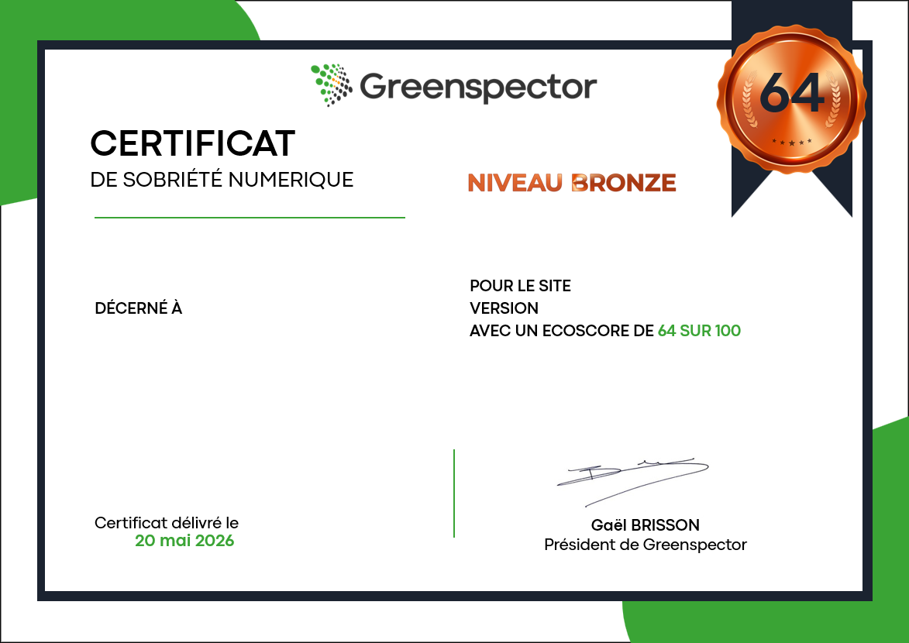

Reconnaissance
Solution reconnue pour son efficacité environnementale.
Conseil
Conseil green IT: faites-vous accompagner par les experts Greenspector.
Expertise projet
Vous ne souhaitez pas utiliser Greenspector Studio en autonomie ? Nos partenaires et nos experts l'utilisent pour vous apporter le meilleur niveau d'accompagnement.
Accompagnement à l'écoconception d'une refonte, revue de design fonctionnel et technique, audit RGESN: nous intervenons selon vos priorités.
Contactez-nous pour échanger en direct avec notre équipe ou avec nos partenaires agréés.
Projet build
Nous vous accompagnons tout au long du projet sur deux axes complémentaires:
À chaque sprint, vous avez les clés pour orienter ou réorienter le projet vers sa cible. Une évaluation finale valide ensuite le résultat atteint.
Définissez vos objectifs, puis atteignez-les avec une trajectoire mesurable.

Conseil Green IT
Nous vous apportons notre expertise sur les sujets structurants de votre transformation numérique responsable.
Certificat
Le certificat est délivré aux applications mobiles et sites web qui allient avec succès sobriété énergétique, sobriété des données et performance utilisateur.
Les mesures sont analysées puis traduites en scores et en écoscore de 0 à 100. Le certificat est attribué selon le niveau Bronze (50-69), Argent (70-89) ou Or (90-100).
Un badge communicable en interne et en externe est associé à une page d'authentification hébergée par nos soins.

Ils en parlent
Se faire accompagner par un acteur comme Greenspector, c'est s'assurer de ne pas faire fausse route ou de prendre des raccourcis.
Standards
Solution reconnue pour son efficacité environnementale.
Une expertise fondée sur la recherche, les publications et les retours terrain.
ACV (ISO 14040), SCI Green Software Foundation, RCP ADEME et standards associés.
Références
Pour allier responsabilité environnementale, satisfaction utilisateur et performance applicative.